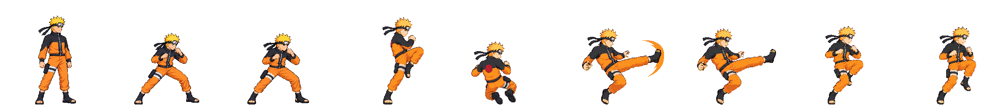
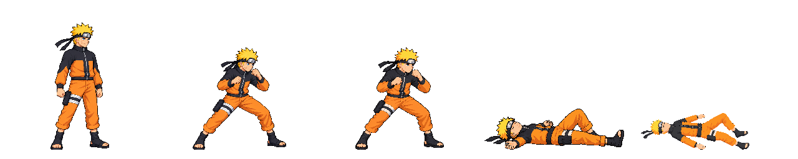
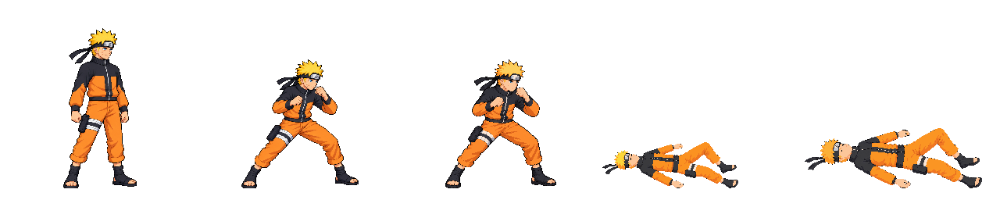
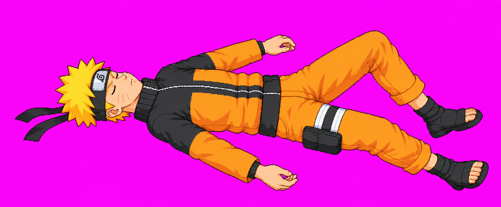
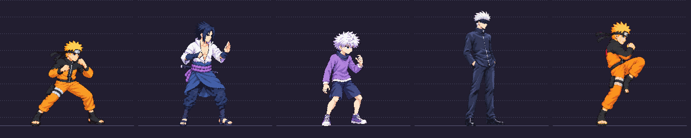

Approved title anatomy


New unapproved drafts after the user rejected both v08 images. Exactly one generation call for KO and one per kick part. Recommend airLight3 v09 for visual review. KO remains a calibration/anatomy/contact HOLD. This page does not approve art or change the live game.
QA and calibration provenance · Earlier round2 batch
Strict isolated pack exit0, strip ok, zero warnings. All six heads1.016–1.054 of idle; every frame inside x4..251. A measured8px left placement restores active frame2's cell margin without rescaling anatomy. Whole four-plus-two figure parts use a measured fresh-idle stitch factor; recovery shares the kick's build.
One-shot attack automatically replays for inspection. Heads sheet · Part A source · Part B source
Native comparison: approved neutral / approved combat / actual idle07 / f0…f5.

Original supine one-knee-raised pose preserved, with a cleaner face and linked neck/shoulders. The new source is shown below. The current official59px pose fit packs this art too small and reads unmeasured; it is not ready for approval or shipping. Its margin is repaired by1px placement, but ground/anatomy/calibration remain unresolved.
Current59px pack: approved neutral / approved combat / idle07 / down05 f1 / newKO.

Same unedited source pixels uniformly fitted at77px with a measured40px position shift. It fits x6..232 and looks closer in overall scale, but remains unmeasured. Manual correspondence estimates have uncertainty from foreshortening/clothing;77px is not a certified production target or pass. Claude must review calibration and contact. The official manifest stays59px.
Approved neutral / approved combat / idle07 / official59px pack / diagnostic77px proposal.

Current official59px diagnostic heads · Full-resolution KO source

Existing packed cast plus new kick f0. Older build bands and existing packed fighters do not replace the exact approved title references above.
